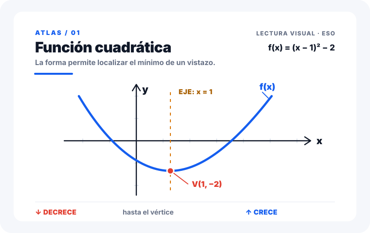

<!doctype html><html lang="es"><meta charset="utf-8"><title>Atlas refinado</title><style>body{margin:0;min-height:100vh;display:grid;place-items:center;background:#eaf0f7;font-family:Inter,Segoe UI,Arial,sans-serif}main{width:min(920px,94vw)}h1{margin:0 0 8px;color:#101828;font-size:28px}p{margin:0 0 22px;color:#475467}img{display:block;width:100%;height:auto;border-radius:18px;box-shadow:0 18px 45px rgba(16,24,40,.12)}</style><main><h1>Atlas — lectura priorizada</h1><p>Una curva, un eje de simetría, un vértice y tres anotaciones sin colisión.</p></main></html>